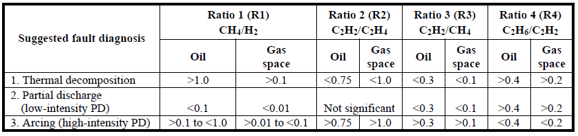
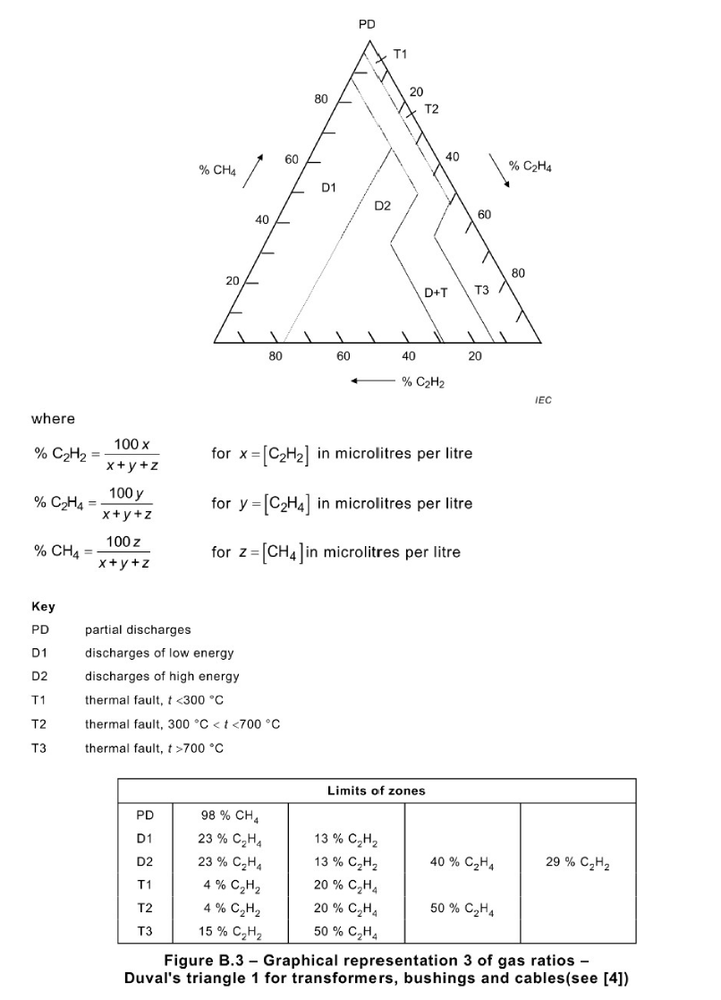

Appendix
Dictionary of Literary Terms:
(1) Data Recovery: Currently, some large capacity transformers install online DGA monitoring equipment. However, most transformer operators measure DGA data periodically through offline methods. Due to human error and the volatility of the measured gas, measurement errors in offline methods occur quite often, causing misdiagnosis and leading to an erroneous action plan. To prevent these problems, GuardiOne® Transformer provides an error compensation algorithm for data recovery of six gases (H2, CH4, C2H2, C2H4, C2H6, CO) using statistical data imputation. The algorithm is only activated when there are at least four continuous measurement data for a transformer. If there are more than four continuous DGA data points and data anomalies are found, all six gases data used for AI calculations are pre-processed through data imputation.
(2) Oil Filtration Evaluation Criteria: For instantaneous transformer condition improvement, a regular or temporary oil filtration maintenance is conducted for transformers. However, if the filtering date is not recorded, GuardiOne® Transformer activates its self-evaluation criteria algorithm to determine if the oil has been filtered. GuardiOne® Transformer uses different prognosis models depending on whether oil filtration has occurred. Therefore, if it is determined that oil filtration has occurred, the appropriate prognosis model is used.
(3) Fault Detection/Isolation/Prognosis based on AI: GuardiOne® Transformer is an innovative software that uses deep learning to detect current health status (normal/warning/critical/fault), and to predict future status (normal/warning/critical/fault) based on historical data. The fault prognosis algorithm is similar to the data recovery algorithm in that in requires at least four continuous DGA data to prognosis the next status. The prognosis algorithm is deactivated when AI detects that the transformer is faulty. GuardiOne® Transformer also provides a method to isolate faulty components. GuardiOne® Transformer is based on the fault data of the four main components (winding/core/OLTC/bushing) with the most frequent and critical faults. It identifies the component with the highest probability of fault among the four components when it detects a faulty transformer.
(4) Similarity Analysis: The similarity analysis is calculated by using the feature values (variables indicating the status of transformers based on Industrial AI provided only by GuardiOne® Transformer) extracted from DGA data for each transformer data GuardiOne® Transformer has access to. According to the time flow of each transformer, four continuous feature values are set as a bundle. Then the difference between the feature values of the latest four DGA of the target transformer and the bundled feature values is calculated. With this, users can find the transformers with the most similar data bundle to the target transformer. In order to run the similarity algorithm, both the transformer used for comparison and the target transformer must have at least four serial DGA values in the database. GuardiOne® Transformer provides visual information (four continuous and the prognosis) on the features, DGA trend, status trend and similarity of the most similar bundle of transformers as a reference for users to check the future status of transformers.
(5) IEEE Std C57.104TM-2008 - Dissolved key gas concentration limits: A four-level criterion of ‘IEEE Std C57.104TM-2008 - IEEE Guide for the Interpretation of Gases Generated in Oil-Immersed Transformers’ classifies transformer risks. The content includes threshold for the dissolved gas concentrations of individual gases and TDCG from Condition 1 to Condition 4. The condition for a target transformer is determined by using the highest level for individual gases or the TDCG in Table 1. For detailed technical description, please refer to ‘IEEE Std C57.104TM-2008 - IEEE Guide for the Interpretation of Gases Generated in Oil-Immersed Transformers’.
(6) IEEE Std C57.104TM-2008 – Doernenburg Ratios: Doernenburg Ratios is a method to evaluate possible fault types and fault modes as specified in ‘IEEE Std C57.104TM-2008 - IEEE Guide for the Interpretation of Gases Generated in Oil-Immersed Transformers’. As shown in Table 2, R1 (Ratio1, CH4/H2), R2 (Ratio2, C2H2/C2H4), R3 (Ratio3, C2H2/CH4), R4 (Ratio4, C2H6/C2H2) data is compared to thresholds, to identify the corresponding fault mode. For detailed technical description, please refer to ‘IEEE Std C57.104TM-2008 - IEEE Guide for the Interpretation of Gases Generated in Oil-Immersed Transformers’.

(7) IEEE Std C57.104TM-2008 – Rogers Ratios: The Roger Ratios method follows the same general procedures as the Doernenburg method, except it only uses three ratios (R1 C2H2/C2H4, R2 CH4/H2, R5 C2H4/C2H6). However, as with the Doernenburg method, the Rogers Ratios can give ratios that do not fit into any of the diagnostic codes. Therefore, other analytical methods such as Duval Triangle 1 and Basic Gas Ratio must be referenced to diagnosis fault modes. Table 3 gives the values for the three key gas ratios corresponding to suggested diagnoses. For detailed technical description, please refer to ‘IEEE Std C57.104TM-2008 - IEEE Guide for the Interpretation of Gases Generated in Oil-Immersed Transformers’.

(8) IEC 60599:2015 - Duval Triangle 1: Duval Triangle 1 is a fault identification method provided in ‘IEC 60599 – Mineral oil-filed electrical equipment in service – Guidance on the interpretation of dissolved and free gases analysis’. As shown in Figure 1, the triangle is divided into six particular fault mode zones, and the corresponding fault mode is identified according to the three gas ratio values (R1 C2H2/C2H2+C2H4+CH4, R2 C2H4/C2H2+C2H4+CH4, R3 CH4/C2H2+C2H4+CH4). For detailed technical description, please refer to ‘IEC 60599 – Mineral oil-filed electrical equipment in service – Guidance on the interpretation of dissolved and free gases analysis’.

(9) IEC 60599:2015 - Basic Gas Ratios: Other than the Rogers Ratios method provided in IEEE Std C57.104TM-2008, IEC 60599 also specifies a fault identification method using three different gas ratios (R1 C2H2/C2H4, R2 CH4/H2, R3 C2H4/C2H6). Each of the six different fault classes have unique hydrocarbon gas composition patterns, as described in Table 4. For detailed technical description, please refer to ‘IEC 60599 – Mineral oil-filed electrical equipment in service – Guidance on the interpretation of dissolved and free gases analysis’.
NSa = Non-significant whatever the value